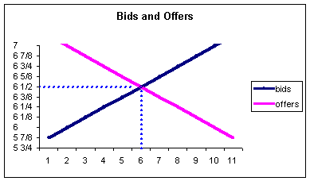
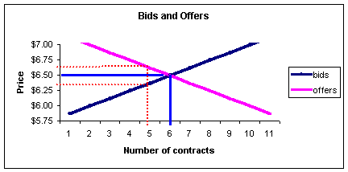
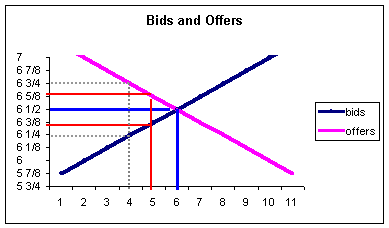

Often when you are trading options, you will notice that the bid-ask spreads can become quite large -- as much as three or four points and more for some of the more volatile indices. These large spreads are usually found for deep in-the-money options and long term LEAPS®.
Understanding why this happens will help you with trading as well as understanding the importance of not placing market orders for options that fall into these categories.
To start, you need to understand how prices are determined.
All prices are determined by equating supply and demand. Although there are substantial differences in the way various securities markets go about equating these two forces, the basic idea applies. For example, option equilibrium is determined in the opening rotation, by the specialist for the New York Stock Exchange and by numerous market makers for the Nasdaq market. All methods have their own benefits and drawbacks but the effects are the same -- they try to determine the fair price of the security.
Let's start with a simple example of how prices are determined, then include the assumption of a bid-ask spread later.
Say there are 11 people who are bidding (wanting to buy) for a particular option and 11 people offering to sell. The following chart shows their bid and offer limit orders. Also, to make things easier, we will assume all participants are placing equal numbers of contracts.
|
Bids |
Offers |
|
7 1/8 |
5 7/8 |
|
7 |
6 |
|
6 7/8 |
6 1/8 |
|
6 3/4 |
6 1/4 |
|
6 5/8 |
6 3/8 |
|
6 1/2 |
6 1/2 |
|
6 3/8 |
6 5/8 |
|
6 1/4 |
6 3/4 |
|
6 1/8 |
6 7/8 |
|
6 |
7 |
|
5 7/8 |
7 1/8 |
Keep in mind that a bid of $7-1/8, for example, means that is the highest price that person is willing to pay; they will gladly pay less, just no higher. An asking price (or offer) of $7-1/8 is the lowest for which that person is willing to sell; they will surely sell for more, just not less.
The question now is what is the fair price for the option? Again, to make things a little easier, we will assume no bid-ask spreads at this point.
Say the option opens up with a price of $7-1/8, the highest bid. Because we are assuming there is no bid or ask spread, any buyer can buy for $7-1/8 and any seller may sell for the same price. What will happen? If you look closely at the above chart, you will see that there is only one buyer (the one bidding $7-1/8) but 11 sellers. Why 11 sellers? Obviously, the lowest offer of $5-7/8 will certainly be willing to sell for $7-1/8. So all 11 offers will want to sell, but only one person is willing to buy -- you have unequal supply and demand.
What happens if you have unequal supply and demand numbers? If you have unequal numbers, in this case more sellers than buyers, the sellers will start competing for that buyer's business and the price will fall. In order to keep buying or selling pressure from being prevalent, there must be equal numbers of buyers and sellers. It can also be shown, although we will not do it here, that when the numbers are equal, that will be the point of maximum profit for the market makers, so they have great incentive to find this point.
Back to the example, what if the option price opens at $6? Now there will be 10 buyers; all of them will buy except for the person who bid $5-7/8. For the sellers, only two people will sell: the person who is willing to sell for $5-7/8 and the one willing at $6. Again, we have unequal balance between supply and demand except, this time, there are more buyers. The buyers will start to compete for the business of the two people willing to sell and the price will be bid up.
The price where there is no imbalance is $6-1/2. If the option's price is $6-1/2, you will have 6 buyers and 6 sellers.
Looking at our bids and offers in the above chart graphically:
We see that at a price of $6-1/2, we can exactly clear the market; there is a buyer for every seller at that price.
However, because of the nature of the markets, market-makers will put in bid-ask spreads as a profit margin for matching buyers and sellers. So they may post this option as bid $6-3/8 and offered at $6-5/8. Now, because of the bid-ask spread, we have three forms of inefficiencies, and investors must now:
1) Pay a higher price ($6- 5/8 vs. $6-1/2)
2) Sell for a lower price ($6-3/8 vs. $6-1/2)
3) Have less volume (5 instead of 6)
These are the three inefficiencies created by bid-ask spreads.
Now, think about this: What would happen if the volume were reduced to only four buyers and sellers?
If the volume is reduced to four contracts, the bid-ask spread will widen as shown by the dotted gray line above. Notice how much wider the dotted line is compared to the red line that represented the initial bid-ask spread (shown in red).
Often you will hear that the large spreads are a result of market-makers "playing games," or trying to cheat you on your order. Bear in mind that the only way they make money is to fill orders, not just produce quotes. If the spreads are too wide, investors will not be attracted to the security and will produce no volume. In addition, if the spreads are unfairly too wide, you can be assured another market maker will compete for the business and narrow the spread. Market makers are reflecting the liquidity risks by the bid-ask spreads and their ability to spread the risk by hedging the position. If you feel a bid-ask spread is too wide, remember, you are always free to "tighten the spread" by either bidding higher or selling for less (please see our section on "Show or Fill Rule".)
So, what you want to get from all this is that the market determines the bid-ask spread--not the market-makers. So if you see an option (or stock, for that matter) with a large bid-ask spread, just understand that this is the sign of a potential liquidity problem. If placing orders in these securities, it is generally advisable to consider going "in between" the bid-ask spreads to improve your trading results.
For example, say the quote is bid $6-1/4 and ask $6-3/4. If you want to buy, you can buy at the asking price and pay $6-3/4. Or you can put in a bid above the current bid of $6-1/4. Say you put in a bid of $6-1/2. The quote will now jump to bid $6-1/2 and ask $6-3/4. Notice that your higher bid has tightened the spread. There is now a higher bidder on the market (that's you) at $6-1/2, which gives a seller incentive to sell because of the higher price. The reverse holds true for sellers. If a seller places an offer below the $6 3/4 quote, say $6-5/8, the quote will now become bid $6-1/2 and ask $6-5/8. The new lower asking price will give another investor incentive to buy. Notice how the spread has been further narrowed from the original 1/2 point spread (bid $6 1/4 and ask $6-3/4) to a 1/8th point spread (bid $6-1/2 and ask $6-5/8).
Large bid-ask spreads can be frustrating, especially when using options, because of the leverage. Use this information before entering into the position and do not be afraid to compete for a better price (unless there is some reason you absolutely must have the trade). If you do not get the option, this only represents a lost opportunity, which is usually better than a lost profit from being forced to exit a position that holds large bid-ask spreads.